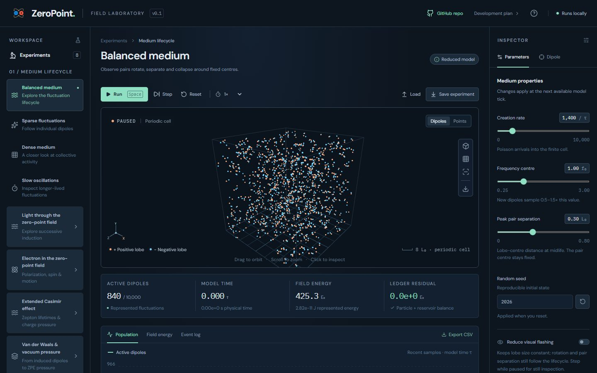
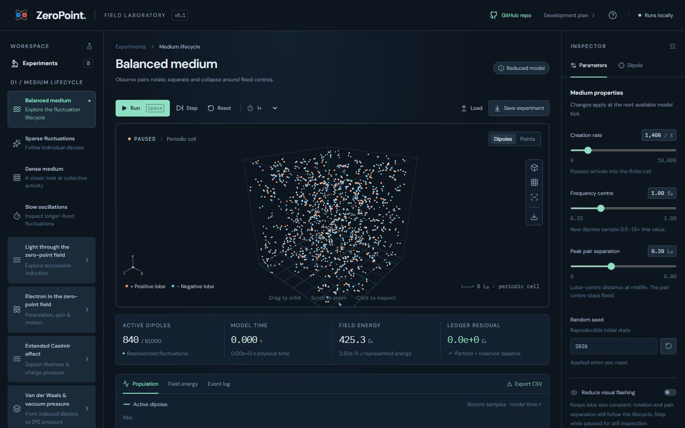
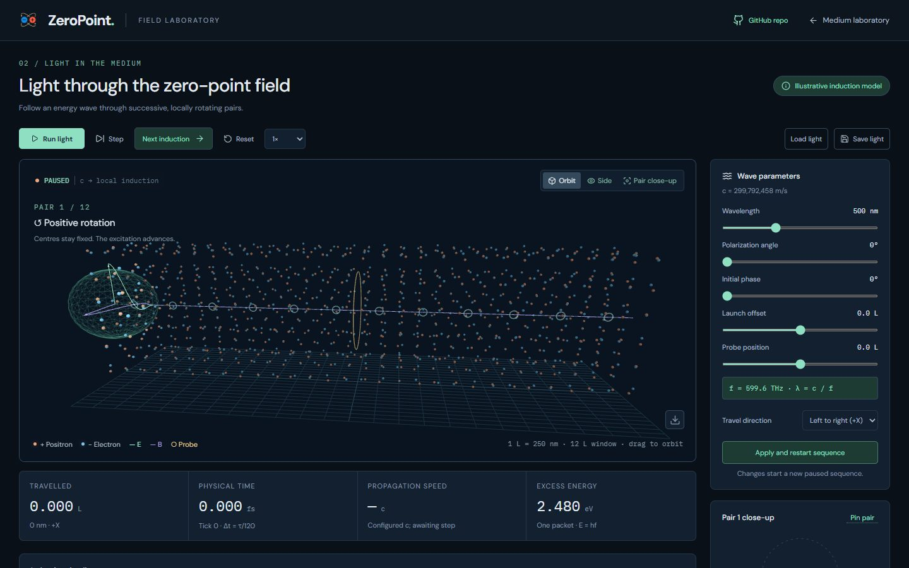
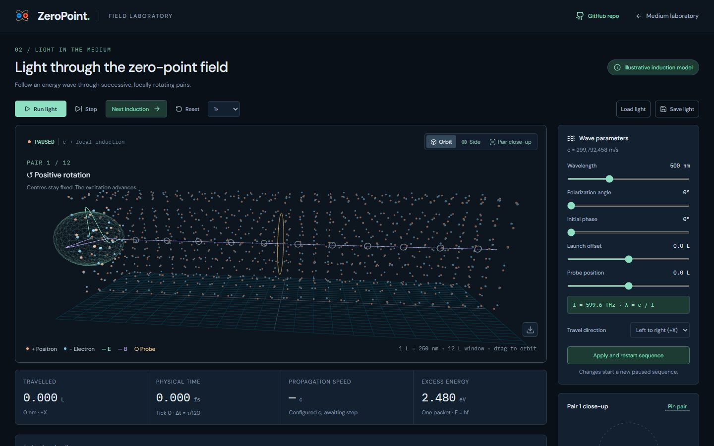
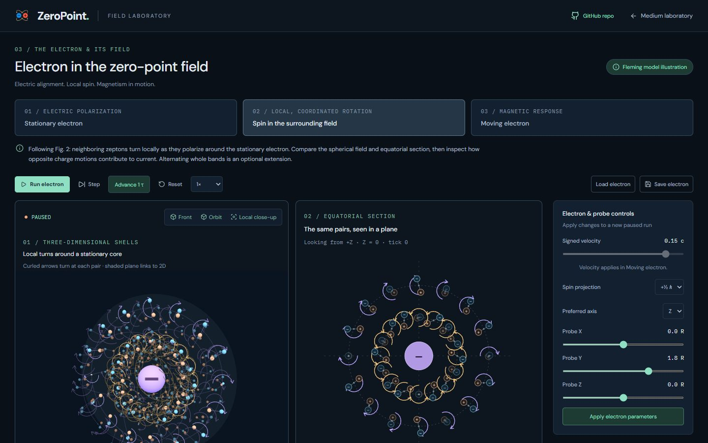
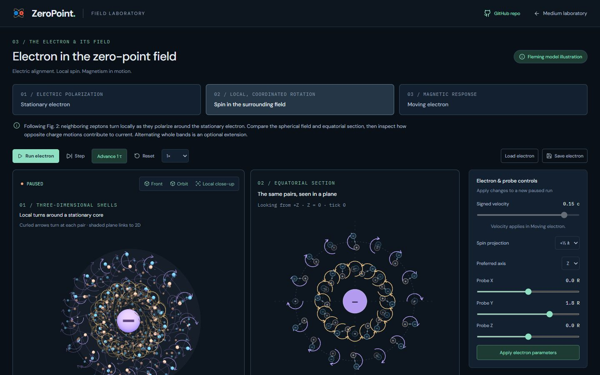
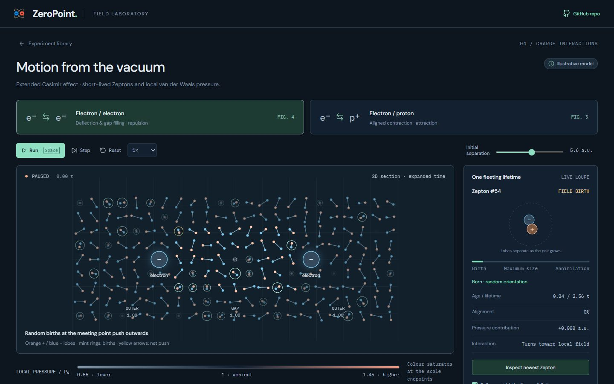
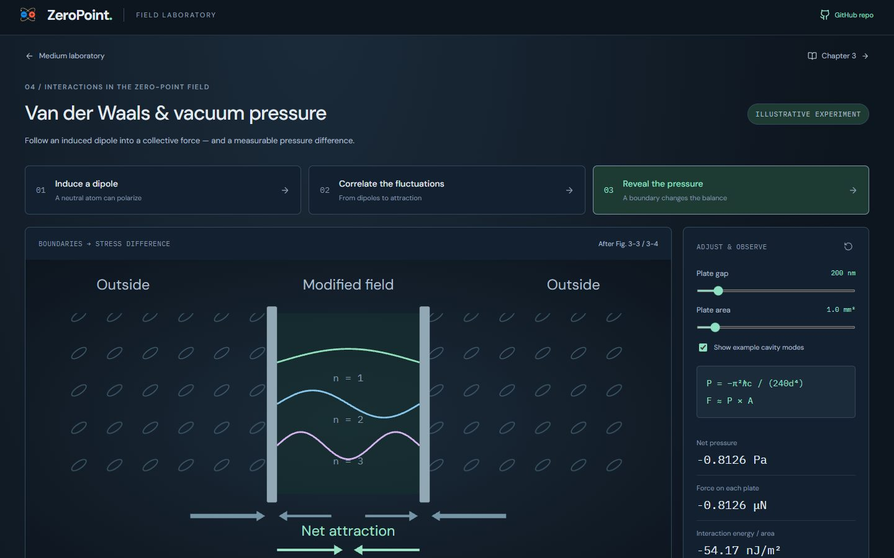
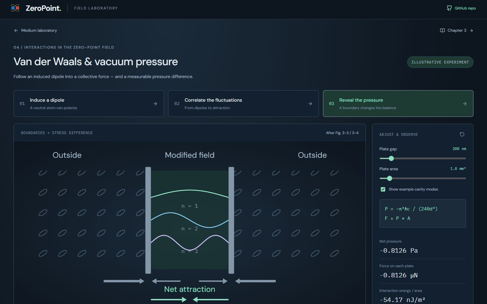

Palette in code (UI 01h): before and after
Colours set in code (Three.js scenes, canvas drawing and the SVG diagrams built in components) move onto the palette. Data colours gain light, dark and deep shades, so each keeps its hue. Scene lighting and emissive glows are kept exactly, as named scene constants.
Real screens: "before" runs the layer below, and "after" runs this layer. Click an image to open it at full size. Regenerate with node scripts/compare-screens.mjs.
Medium · Balanced




Light · Induction sequence




Electron · Spin in the field




Extended Casimir · e⁻/e⁻



Van der Waals · Plate pressure



